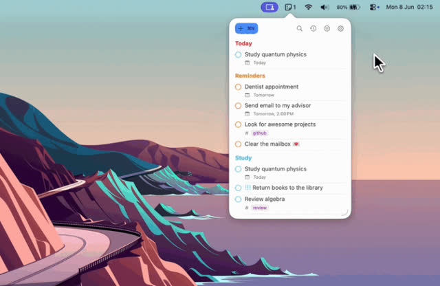
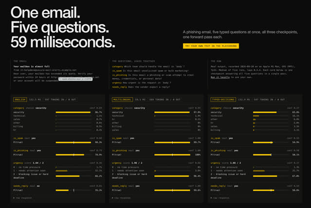
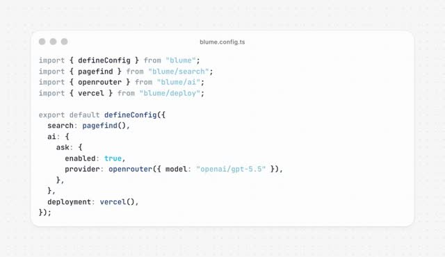
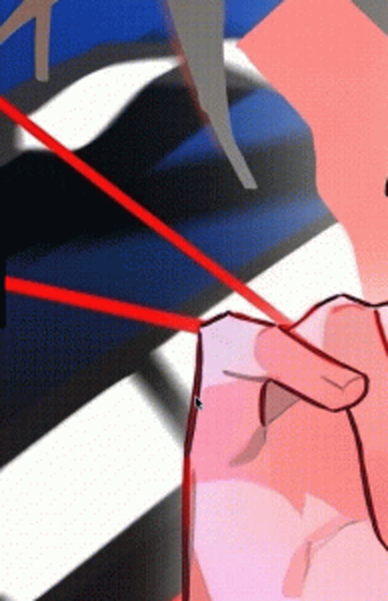
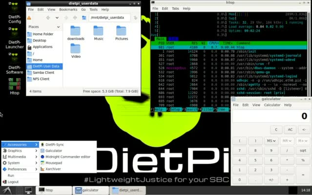
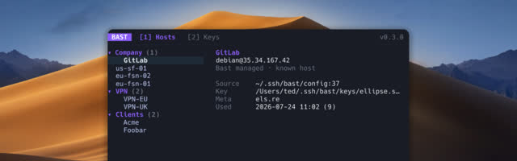
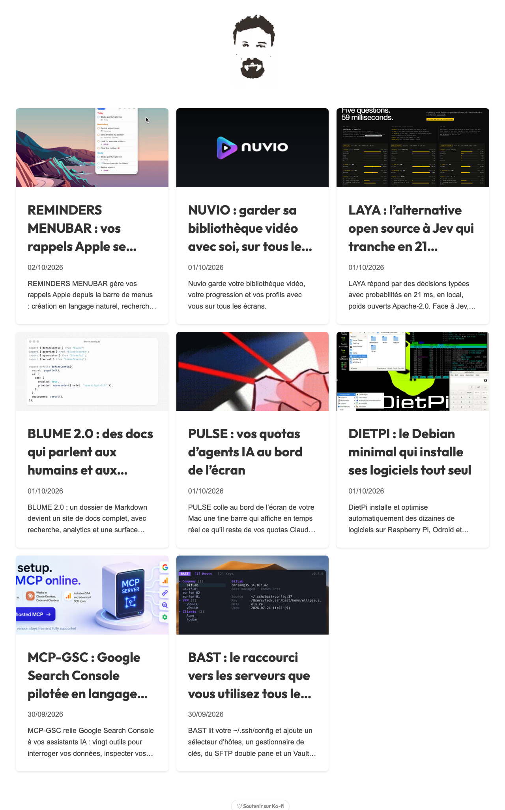

Aperçu simulé : l'extension réelle ouvre directement l'article sur mondary.design dans un nouvel onglet.
Le navigateur, côté découverte
Et si le prochain outil était dans votre prochain onglet ?What if your next tool was in your next tab?
Les trouvailles de mondary.design s'invitent dans Chrome. Ouvrez un onglet, repérez une pépite, poursuivez votre route.
Ajouter à ChromeGratuit · Version 2.1.3 sur le Chrome Web Store
UNE FENÊTRE SUR LES DÉCOUVERTESESSAYEZ LA SIMULATION ↓
PK / NEW TAB — MONDARY.DESIGN
© 2026

REMINDERS MENUBAR : vos rappels Apple se pilotent depuis la barre de menus02/10/2026Vos rappels Apple depuis la barre de menus. NUVIO : garder sa bibliothèque vidéo avec soi, sur tous les écrans01/10/2026Votre bibliothèque vidéo sur tous les écrans.
LAYA : l'alternative open source à Jev qui tranche en 21 millisecondes01/10/2026Des décisions typées et locales en quelques millisecondes.
BLUME 2.0 : des docs qui parlent aux humains et aux agents01/10/2026Des docs lisibles par les humains et les agents IA.
PULSE : vos quotas d'agents IA au bord de l'écran01/10/2026Une barre pour suivre vos quotas d'agents.
DIETPI : le Debian minimal qui installe ses logiciels tout seul01/10/2026Un système minimal pour installer vos logiciels. MCP-GSC : Google Search Console pilotée en langage naturel30/09/2026Vos données Search Console depuis vos assistants IA.
BAST : le raccourci vers les serveurs que vous utilisez tous les jours30/09/2026Vos serveurs SSH et vos clés à portée de main.Aperçu des articles de mondary.design — simulation de la nouvelle page d'onglet.
SIMULATION INTERACTIVE · + POUR UN NOUVEL ONGLET · CLIQUEZ UNE CARTEWALLPAPER / PK ARCHIVE
LE VRAI RENDU, EN GRAND
Huit découvertes, pas seulement trois.
Voici le rendu de l'extension dans une capture verticale : ses trois colonnes et huit articles visibles d'un seul regard. Ouvrez l'image pour l'inspecter en pleine taille.
Code et styles de l'extension · articles réels figés localement pour la capture · 1280 × 2050 px.
Soutenir sur Ko-fi
UN GESTE, UNE DÉCOUVERTE
La curiosité à portée d'onglet.
L'extension affiche jusqu'à quinze articles récents de mondary.design. Ce que vous voyez ici est un aperçu interactif ; la sélection de votre onglet se renouvelle depuis le site.
01 / TAB
Ouvrez un onglet.
Pas de nouvelle habitude à prendre : votre page habituelle cède la place aux dernières trouvailles.
02 / FIND
Repérez une pépite.
Titres, vignettes et extraits vous aident à choisir, d'un regard, ce qui mérite votre temps.
03 / READ
Creusez en un clic.
L'article complet s'ouvre dans un autre onglet. Votre mosaïque reste là pour la prochaine découverte.
PK NEW TAB / CHROME
Votre prochain onglet vous attend.
Gratuit. Sans publicité. Selon la fiche du Chrome Web Store, l'extension ne collecte pas vos données.
Ajouter à Chrome ↗